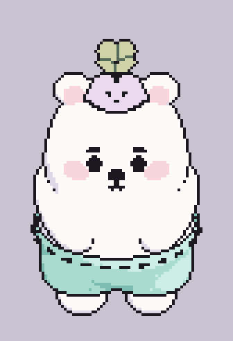
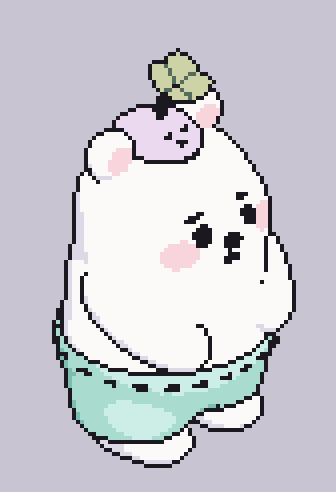
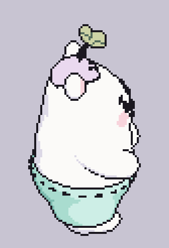
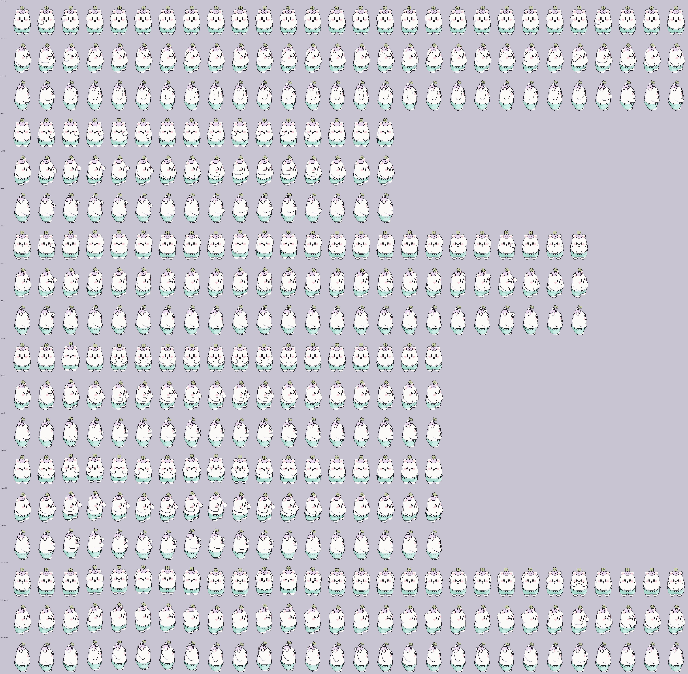
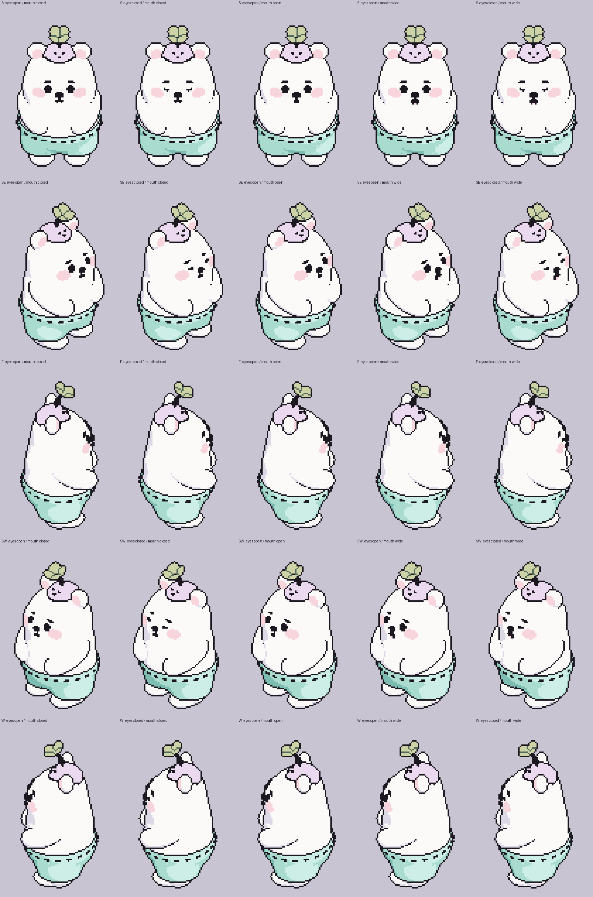
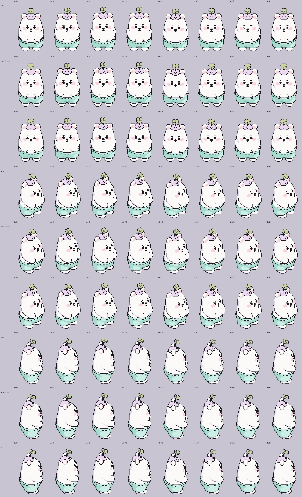

Loops (think, talk, ask) and one-shots (oops, happy, celebrate) start, and one-shots end, on idle frame 0. Eyes stay open in the clips: blinking and talking come from the face layers below.
think (loop, 28 frames)

S

SE

E
talk (loop, 16 frames)
SSEE
ask (loop, 24 frames)
SSEE
oops (one-shot, 18 frames)
SSEE
happy (one-shot, 18 frames)
SSEE
celebrate (one-shot, 28 frames)
SSEE
all clips, S / SE / E (2x)

contact_c.png
Face layers (D16)
Each eyes / mouth state patch drawn over idle frame 0. The idle sheet compares the shipped idle body, the body with the default patches, and the Blender reference.
states over idle frame 0: S, SE, E, SW, W

states_contact.png
idle: body | body + default patches | reference

idle_compare.png
six worst tolerated frames: body | body + default | expected | residual